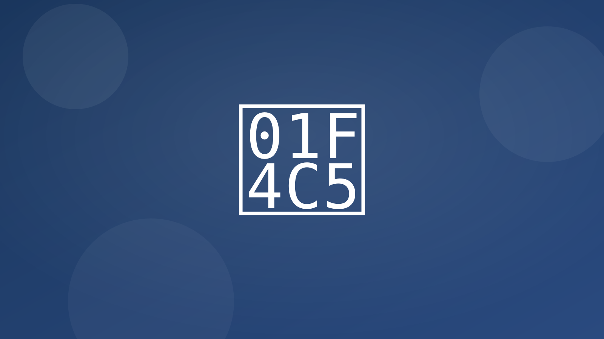

Confirma, recuerda y reprograma sin intervención manual.
- Reserva online + recordatorios Confirmaciones, recordatorios a 24h/2h, enlaces para reprogramar/cancelar; rellena cancelaciones con lista de espera y doble confirmación para primeras visitas.
- Reductor de no-shows Mensaje "confirma o cambia cita"; libera automáticamente el hueco si no hay respuesta y ofrece el hueco a la lista de espera.
- Programación de visitas en campo Propone huecos, asigna técnico por zona, envía ETA y mapa en vivo; parte de trabajo y firma digital al cierre.
Integraciones típicas
- Google/Outlook Calendar, Calendly/TidyCal
- Maps/Here para rutas y ETA
- WhatsApp/SMS para recordatorios
KPIs esperados
- −30–50% no-shows
- +10–20% ocupación de agenda
- Menos llamadas de coordinación